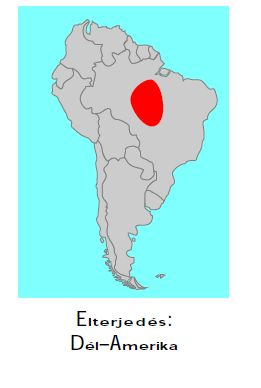

Hosszméreteit tekintve Földünk egyik legnagyobb papagájfaja. A sűrű trópusi erdőségeket, illetve a ritkásabb, ligetesebb erdőket egyaránt kedveli. Tápláléka kemény héjú diókból és más termésekből, magvakból, hajtásokból és gyümölcsökből áll, de megfigyelték, hogy csigákkal is táplálkozik. Alapvetően párban él, de nagyobb távolságokat rendszerint csapatosan tesz meg.
A jácintkék ara csőre rendkívül erőteljes. Könnyűszerrel töri fel vele a trópusi diókat és más, kemény héjú terméseket. Gyakran faodvakban fészkel, és az odú kitágításában a csőr szintén jó szolgálatot tesz. Emellett kapaszkodásra is használja, hiszen a fák ágain kúszva a két láb nem elég egy ilyen nagy test biztonságos megtartására.
A jácinkék ara monogám, vagyis életre szólóan választ párt magának. A tapasztalatok azt mutatják, hogy elég válogatósak. Az állatkertekben is előfordul, hogy az összehozott pár nem jön ki egymással, ilyenkor másik párt kell felkínálni az állatoknak.
Az állatkert jácintkék arapapagája: Tinta